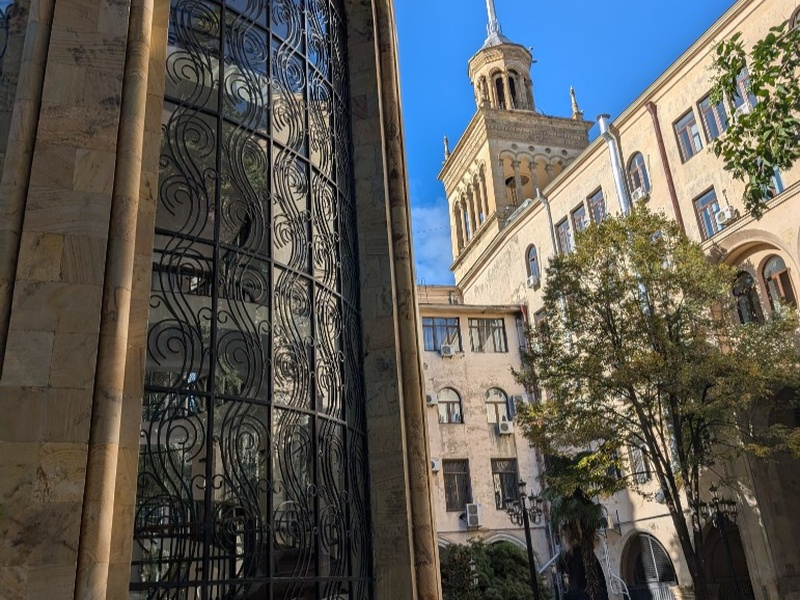
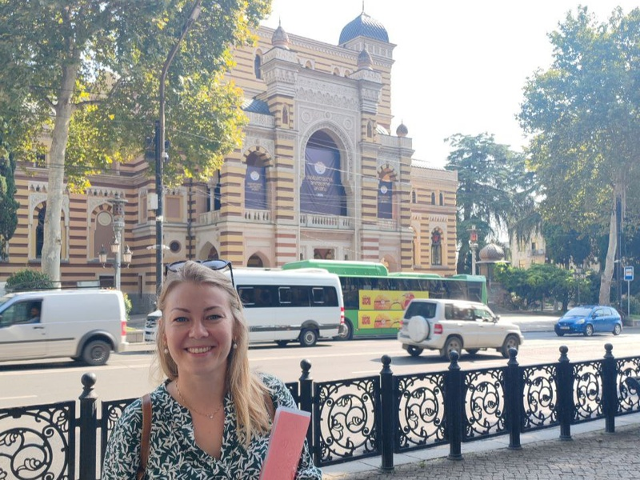
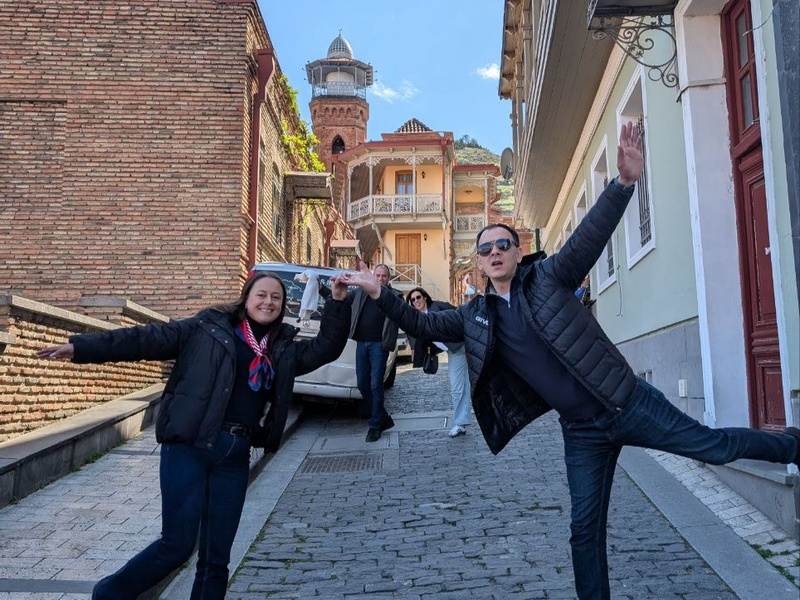
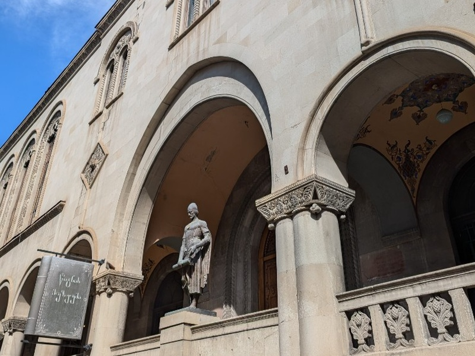
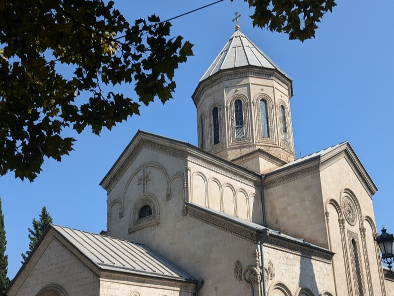
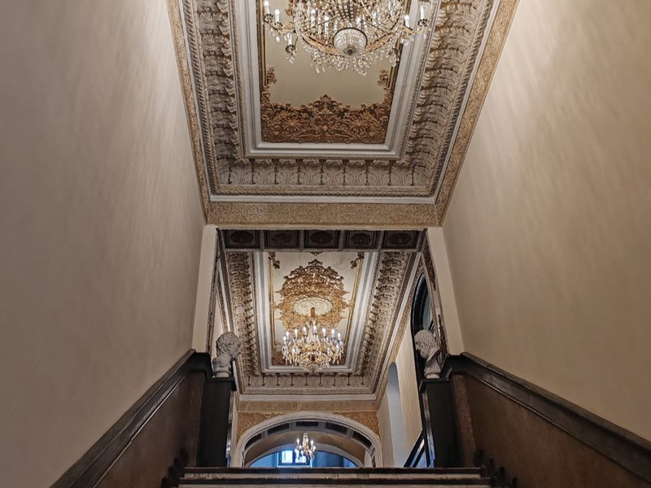

Вековая палитра Тбилиси:
от архитектурных эпох до уличного стиля
Обзорная прогулка по Тбилиси
Авторская пешая экскурсия, в которой вы увидите не только самые популярные, но и скрытые на первый взгляд места, которые раскрывают душу страны, культуру и понимание ее жителей. Тбилиси — город музей под открытым небом, в котором каждый квартал наполнен историями и искусством.
Подробнее о маршруте и деталях
На пути увидим:
- Архитектуру проспекта Руставели разных эпох
- Академию художеств и Оперный театр
- Театр марионеток Резо Габриадзе
- Старый город и крепостные стены
- Мост Мира и парк Рике
- Монумент «Мать Грузия» и панорамы города
- Серные бани - место, где зарождался Тбилиси
Узнаем:
- Краткую историю Грузии и легенду основания Тбилиси
- Про кого была история из песни «Миллион алых роз»
- Историю грузинского алфавита
- О Золотом веке и как развивалась Грузия под влиянием разных культур
- Архитектурные стили и истории домов по маршруту
Уникальность, кому подойдет
Экскурсия особенно хорошо подойдёт тем, кто в Тбилиси впервые и хочет получить цельное, осмысленное впечатление о городе, а также тем, кто уже бывал здесь, но хочет увидеть Тбилиси с новой, более глубокой стороны.
Организационные детали:
Длительность: 3,5 ч
Маршрут насыщенный, пеший и с перепадами высот.
Обувайте удобную обувь. В жару берите головной убор, очки и воду.
Стоимость:
80 лари/чел
(Минимум 2 человека или 160 лари)
от 4 человек — 70 лари/чел